Know Your Finances
A step-by-step guide for Paramount employees. Look up your own time-off balance and 401(k) numbers in the QuickBooks Workforce app, any time, from your phone.
Open the app
- 1
Open the QuickBooks Workforce app
- 2
Sign in
The app opens on the Money screen. The tabs you need are along the bottom of the screen.
How much PTO do I have left?
- 3
Tap Time Off at the bottom of the screen (the airplane)
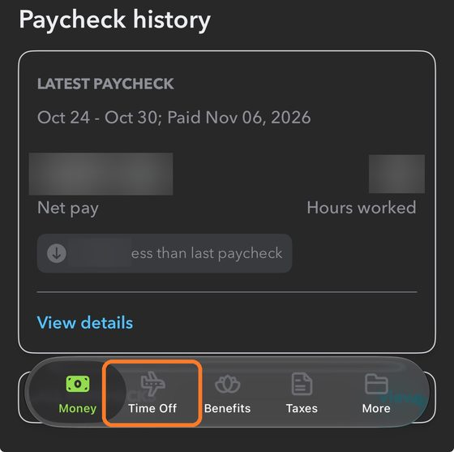
- 4
Look at the Available time off box. The number next to Paid is how many hours you have left.
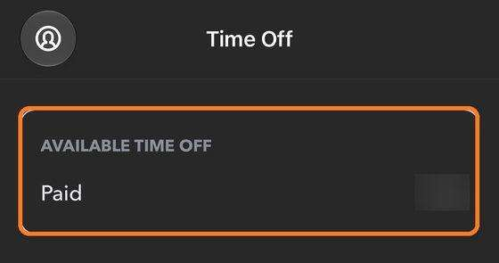
The "h" means hours.
It updates on payday. The balance is as of your latest paycheck. Time off you took after that won't be subtracted yet.
What's going into my 401(k) and what's it at?
- 3
On the Money screen, find Latest paycheck and tap View details.
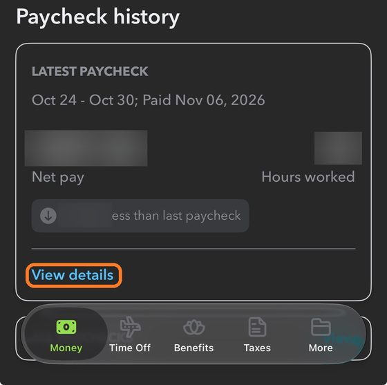
- 4
Tap the little arrow next to Deductions to open it. You'll see your 401(k) line(s) for this paycheck.
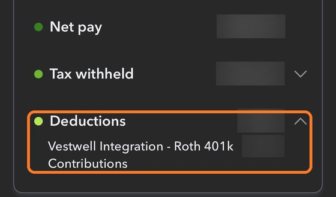
This tells you which account you're putting money in right now.
Not sure what Pretax and Roth mean? See the Tips tab.
- 5
Scroll down to Employer Contributions. This is Paramount's match on this paycheck, money the company adds on top of yours.
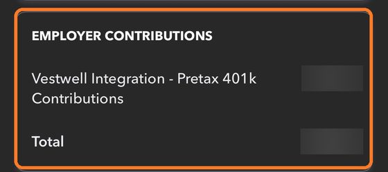
Employer Contributions will always be contributed to your Pretax 401k account.
- 6
Want totals for the whole year? Scroll back to the top of the paycheck and tap Year-to-date.
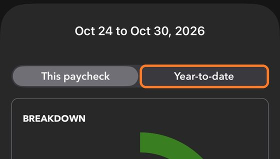
- 7
Open Deductions again and scroll down. The same boxes now show everything since January 1.
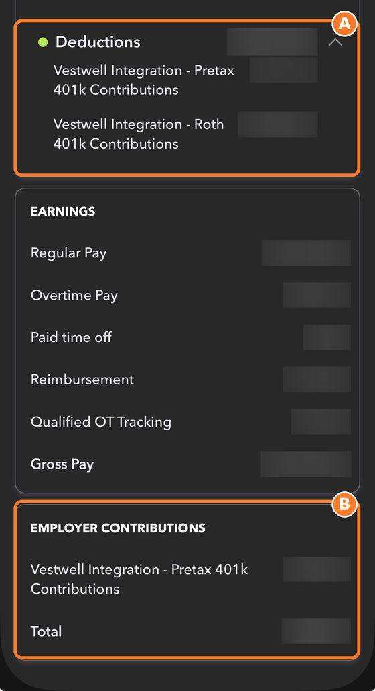
AYour total this year. If you have more than one 401k line, add them together.
BParamount's match this year. Use the Total line.
Seeing both Pretax and Roth in Year-to-date? That means you switched accounts sometime this year. The This paycheck view (step 4) shows what you're using now.
Year-to-date starts over at zero every January 1.
Your 401(k) in Vestwell
Where your 401(k) money lives, how to check it, and how to change what you put in.
Where does my 401(k) money go?
Two places handle your 401(k).
Rule of thumb: Workforce shows what came out of your paycheck. Vestwell shows what's in your account and is where you make changes.
Get into your account
- 1
Download the Vestwell app from the App Store (iPhone) or Google Play (Android). You can also use vestwell.com on a computer.
- 2
First time? Once you're eligible, Vestwell sends you a welcome email. Follow its link to create your login. You're eligible after 6 months on the job.
- 3
Tap Sign In and enter your email and password. Vestwell will text or email you a code to finish signing in.
Tip: turn on Face ID or fingerprint sign-in when the app offers it, so you don't need your password every time.
Your home screen, explained
After you sign in, you land on Retirement Overview. Here's what each part means.
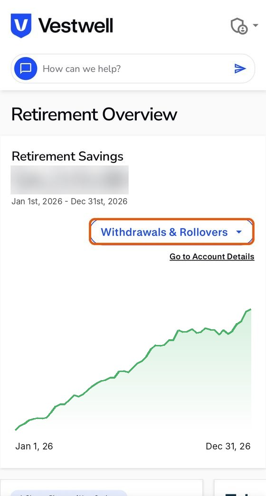
The buttons along the bottom of the app:
- House Home (Retirement Overview).
- Piggy bank Account details: your balance split into Pretax, Roth and company money.
- Chart Investments: what you own and how it's grown.
- Document Statements and plan documents.
- Person Your profile: address, phone, email.
- Retirement Savings
How much is in your account right now, and a chart of how it's grown. - Savings Rates
How much comes out of each paycheck, and whether it goes to Pretax, Roth, or both. This is where you make changes. - Investment Strategy
How your money is invested. - Beneficiary
Who gets your account if something happens to you. - Recent Activity
Every deposit into your account. Saver Contribution is your money (it says Pretax or Roth under it). Employer Contribution is Paramount's match. Pending means it's from your latest paycheck and is still on its way. - My 2026 Contributions
How much you've put in this year, with a bar showing how close you are to the yearly IRS limit ($24,500 in 2026). - Withdrawals & Rollovers
For taking money out, or moving a 401(k) from another job. Most people won't touch this until they leave or retire.
Here's what Recent Activity looks like. Each paycheck adds two lines: your money and Paramount's match.
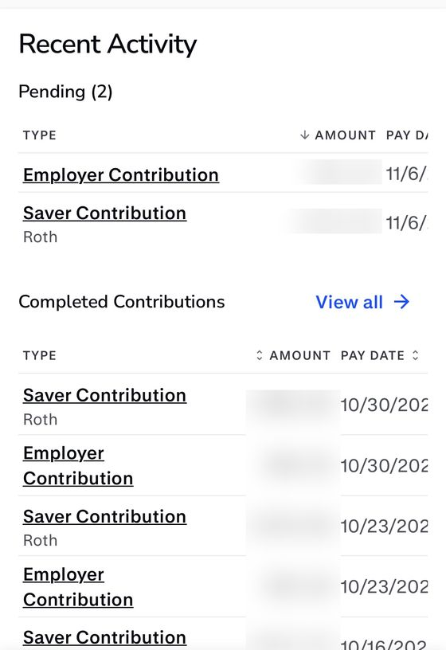
Change how much you save
- 1
On the home screen, find Savings Rates and tap Change Savings.
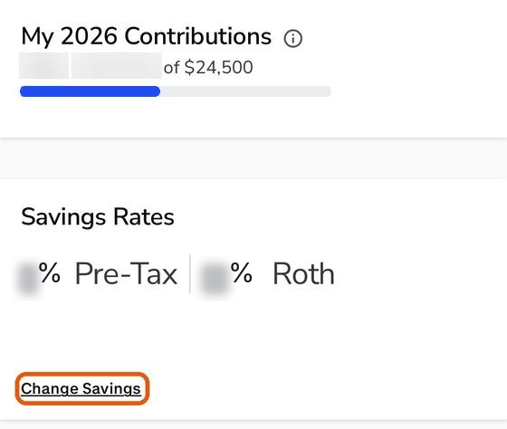
- 2
On Set Your Savings, type the percent of each paycheck you want to save into the Pre-Tax box, the Roth box, or both.
Choose where it goes: Pretax, Roth, or some of each.
Pretax money comes out of your check before income tax is figured, so less income tax is taken from your paycheck. Roth money is taxed now, but comes out tax-free in retirement. More on the Tips page.
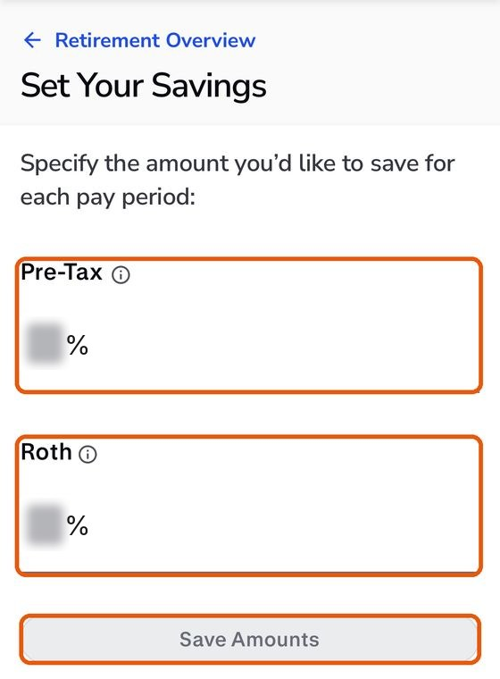
- 3
Tap Save Amounts. Vestwell shows your Old Savings next to your New Savings. Check it, then tap Apply Changes. Changed your mind? Tap Cancel.
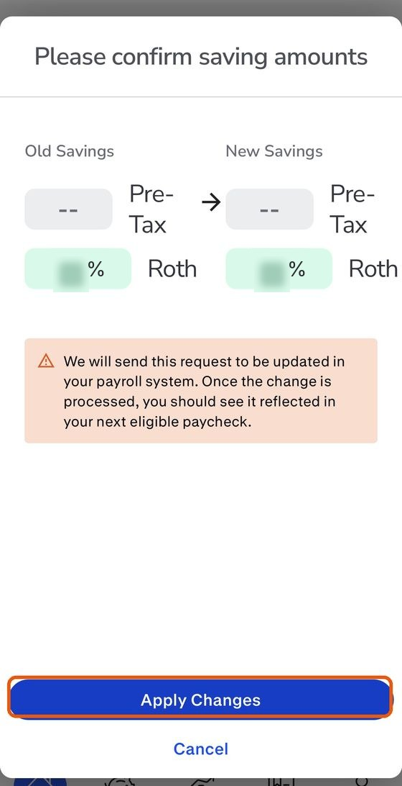
When will I see it on my paycheck? On your very next paycheck. Check it in Workforce under Deductions to make sure it went through.
Want the full company match? Save at least 5% of your pay. Anything less leaves free money on the table.
Check how it's invested
Your money is put into investments that can grow over time. The Investment Strategy section on the home screen shows which option you're using. Tap Manage Investments to see more or switch.
The options:
- Age-based
Picks a mix for you based on when you'll likely retire. It gets more careful as you get closer to retirement. You don't have to do anything. - Risk-based
You answer a few questions about how comfortable you are with ups and downs, and it picks a mix to match. - Goal-based
You enter your income, when you want to retire, and how much you'd like to have each year in retirement. Vestwell builds a plan around that goal and shows whether you're on track. - Custom
You choose the funds yourself. Best for people who already know about investing.
Balances go up and down with the market. That's normal. A 401(k) is for the long run.
To switch, tap Change Strategy at the top of the investments screen.
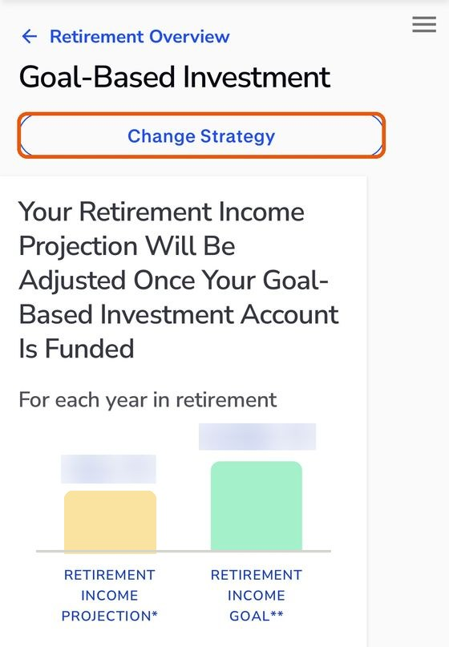
Name a beneficiary
A beneficiary is the person who gets your 401(k) if you pass away. It takes 2 minutes and protects your family.
- 1
On the home screen, scroll to Beneficiary and tap Change Beneficiary, then Add Beneficiary.
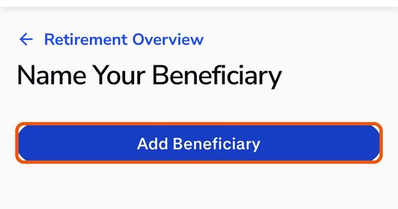
- 2
Enter their name, relationship, Social Security number, birth date and contact info. Have this handy before you start.
- 3
If you add more than one person, split the percentages so they add up to 100%.
Find statements and plan documents
In the app, tap the document icon at the bottom.
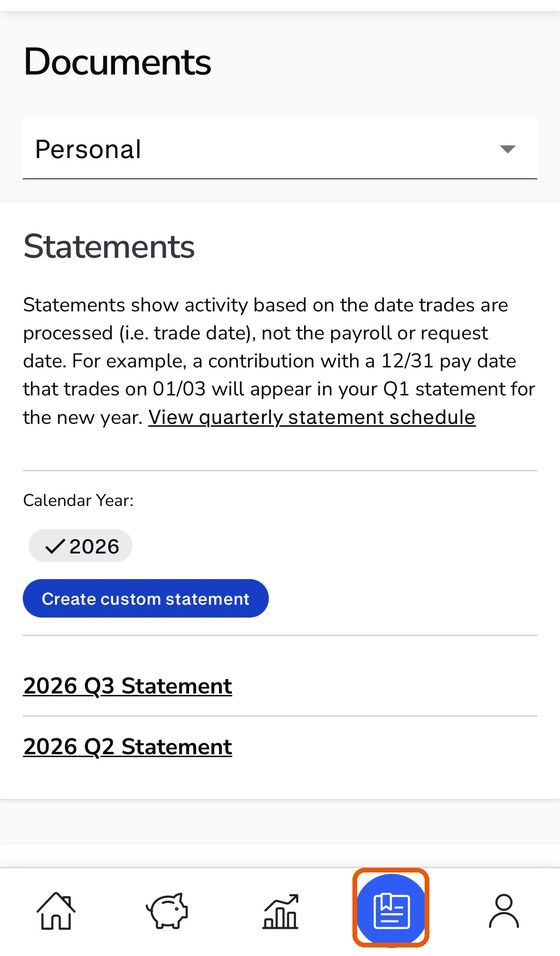
- Statements: a report of your account every 3 months. Tap one to open it, or tap Create custom statement for any dates you want.
- Plan documents: tap the menu that says Personal and choose Plan. There you'll find the Summary Plan Description, the official rulebook for Paramount's plan.
Know your plan
- Company match
Paramount matches 100% of the first 3% you save, plus 50% of the next 2%. Save 5% and Paramount adds 4%.
Example: on a $1,000 paycheck, you save $50 (5%) and Paramount adds $40. That's $90 going into your account.
The match always goes into your Pretax account. - Who can join, and when
Starting January 1, 2027, you can join after 6 months on the job (until then, it's 12 months). Vestwell emails you when you're eligible. - Vesting: when the match is fully yours
Money you put in is always 100% yours. The company match is 100% yours right away too. Nothing is taken back if you leave. - Borrowing from your 401(k)
Yes, loans are allowed. For the rules and how to apply, open the Loan Procedures document: tap the document icon, tap Personal, and choose Plan.
What happens to my 401(k)?
It's still your money. Your usual choices are:
- Leave it in Vestwell.
- Roll it over into your new job's 401(k) or an IRA. Use Withdrawals and rollovers on the home screen to start.
- Cash it out. You'll usually owe taxes, plus a 10% penalty if you're under 59½. This is usually the most expensive choice.
Need help?
- Login, account or investment questions: Vestwell's help chat (the ? icon in the app) or help@vestwell.com.
- Paycheck deduction looks wrong: Talk to Zach.
What will my 401(k) grow to?
Enter how much you save and see what you could have at retirement, including Paramount's match.
Not sure? Look at any paycheck in QuickBooks Workforce. Your amount is under Deductions and Paramount's is under Employer Contributions. If you're paid weekly, multiply each by 4.33 to get a month.
Count paid weeks, including paid time off. Leave out unpaid time off and slow-season weeks without pay.
Check your paycheck: your 401(k) line under Deductions says Pretax or Roth. This choice is only for your own money. Paramount's match always goes into Pretax.
How much your investments grow each year on average. A common planning number for the stock market is about 7% a year. A mix that includes some bonds is often closer to 6%. Some years are up, some are down.
If you save a percentage of your pay, set this to your expected raise, since your dollars (and Paramount's match) go up with your pay. If you put in a fixed dollar amount, leave it at 0%.
Bottom: your money. Middle: Paramount's match. Top: growth, the money your money earned on its own. All amounts are in today's dollars.
What could I live on each month?
Before taxes. $21 an hour for 40 hours a week, 50 weeks a year, is $42,000.
401(k) amount uses the common "4% rule": take out about 4% of your balance each year so it can last around 30 years. The Social Security estimate uses the government's benefit formula and assumes you work about 35 years at today's pay. For your real number, create a free account at ssa.gov/myaccount.
Which costs less, now and later?
Both put the same dollars in your account, so your balance is the same. The difference is when you pay income tax: Pretax skips it now and you pay it when you take money out. Roth pays it now and comes out tax-free later.
Most full-time Paramount employees pay about 12% federal plus about 5% South Carolina tax on their last dollars earned, so about 17%.
Often lower than now, since most people live on less in retirement. It's a guess, and tax laws change.
| Costs your take-home now | Spendable later |
|---|
Both columns are per month. "Spendable later" is your 401(k) income after income tax, in today's dollars, not counting Social Security. Roth costs more now, so to compare fairly, look at Roth next to "Pretax, same cost as Roth." The simple rule: if you expect a lower tax rate in retirement, Pretax wins. If you expect a higher one, Roth wins.
What if I saved more?
401(k) amounts in today's dollars, not counting Social Security.
What does waiting cost?
These are estimates, not promises. Real returns go up and down from year to year, and this assumes prices rise 2.5% a year and doesn't include taxes, fees, or withdrawals. Your own savings are capped at the IRS limit: $24,500 a year in 2026, plus catch-up amounts of $8,000 at ages 50 and up ($11,250 at ages 60 to 63). The limit is assumed to rise with prices over time. This is general information, not financial advice.
Make your paycheck go further
A few simple habits that help you handle surprises, get out of debt, and build real savings over time.
Do these in order
If you're not sure what to do first, work down this list. Each step makes the next one easier.
- 1
Save a small cushion. Get $500 to $1,000 into savings for surprises like a flat tire or a doctor's bill.
- 2
Get the full company match. Put at least 5% of your pay into your 401(k) so Paramount adds its full 4%.
- 3
Pay off high-interest debt. Credit cards and payday loans first.
- 4
Grow your cushion. Work up to 3 months of living costs in savings.
- 5
Save more for retirement. Each time you get a raise, bump your 401(k) up by 1%.
Know where your money goes
You can't steer money you can't see. For one month, write down everything you spend, or check your bank app at the end of each week.
A simple way to split your take-home pay:
- About half: needs
Rent, utilities, groceries, gas, insurance, minimum debt payments. - About a third: wants
Eating out, streaming, hobbies, going out. - At least a fifth: your future
Savings and paying down debt faster.
These are starting points, not rules. If needs take more than half right now, that's common. Start with whatever you can save and build from there.
Build an emergency fund
An emergency fund is money set aside only for surprises. It keeps one bad week from turning into credit card debt or a payday loan.
- Keep it separate from your everyday checking, so you aren't tempted to spend it. A savings account at your bank works.
- Make it automatic. Set up a transfer from checking to savings on payday. Even $20 a week adds up to over $1,000 in a year.
- Refill it after you use it.
What counts as an emergency? Something you didn't plan for and can't skip: a car repair you need to get to work, a medical bill, a lost week of hours. A sale is not an emergency.
Never skip the free money
Paramount matches 100% of the first 3% you save in your 401(k), plus 50% of the next 2%. Save 5% and Paramount adds 4%. That's an instant 80% return on your money, which you won't find anywhere else.
| You save | Paramount adds | Total going in |
|---|---|---|
| 1% | 1% | 2% |
| 3% | 3% | 6% |
| 5% | 4% | 9% |
| 8% | 4% | 12% |
Above 5%, the match stays at 4%, but everything you add still grows for you. See the Vestwell page to change how much you save.
Start early, even if it's small
Money in your 401(k) earns growth, and then that growth earns growth too. The longer it sits, the faster it grows.
Example: You earn $800 a week and save 5% ($40). Paramount adds 4% ($32). That's $72 a week going in.
- Start at 25, keep it up until 65: about $625,000. You put in about $150,000 of that, counting the match.
- Start at 35 instead: about $315,000. Waiting 10 years cuts it in half.
Assumes 6% average growth per year. Real returns go up and down and aren't guaranteed, and this doesn't count raises.
A good rule for starting out
If you're early in your career or earning less now than you expect to later, Roth is often a smart pick. You pay tax now, at a lower rate, and take it out tax-free in retirement.
If you need every dollar of your paycheck today, Pretax lowers the tax taken out of each check. Either one is far better than not saving. More on the Tips page.
Get out of high-interest debt
Credit cards often charge 20% or more a year. Paying one off is like earning 20% on your money, guaranteed.
- Always pay at least the minimum on everything, on time. Late fees and missed payments hurt fast.
- Put extra toward one debt at a time. Either the highest interest rate first (saves the most money) or the smallest balance first (quick wins keep you going).
- Avoid payday loans and title loans. Their fees often work out to several hundred percent a year.
- Paying with a card? Treat it like a debit card and pay the full balance every month.
Why it matters and how to raise it
Your credit score affects the interest rate you get on a car, a house, and sometimes even renting an apartment. A higher score can save you thousands.
- Pay every bill on time. This matters more than anything else.
- Keep card balances low, ideally under 30% of your limit.
- Keep old cards open if they don't charge a yearly fee. A longer history helps.
- Check your reports for free at annualcreditreport.com, the official free site. Dispute anything that isn't yours.
Leave it alone until retirement
It can be tempting to borrow from your 401(k) or cash it out when you change jobs. Both cost more than they look.
- Cashing out usually means paying income tax plus a 10% penalty if you're under 59½, and losing all the future growth.
- A 401(k) loan has to be paid back, and the money isn't growing while it's out. If you leave Paramount with a loan, you may have to repay it quickly or owe taxes on it.
- Changing jobs? Roll it into your new 401(k) or an IRA instead of cashing out.
This is why the emergency fund comes first. With savings to fall back on, you won't need to touch your retirement money.
Your W-4 and your refund
Your W-4 tells payroll how much tax to take from each paycheck. A big refund in the spring feels nice, but it's your own money that you lent the government for free all year.
- Update your W-4 after big life changes: getting married or divorced, having a baby, or a second job.
- Owed a lot last year? You may need more taken out. Got a huge refund? You may be able to take home more each paycheck.
- The IRS has a free Tax Withholding Estimator at irs.gov that tells you what to put on your W-4.
Need help?
- Questions about your paycheck, W-4 or 401(k) setup: Talk to Zach.
- Questions about your 401(k) account or investments: Vestwell's help chat (the ? icon in the app).
This page is general information to help you get started, not personal financial or tax advice.
Good to know
How your 401(k) accounts work, plus answers to common questions.
Still have a question?
Send it to Zach. Just your name and your question, no login needed.
Ask Zach a question